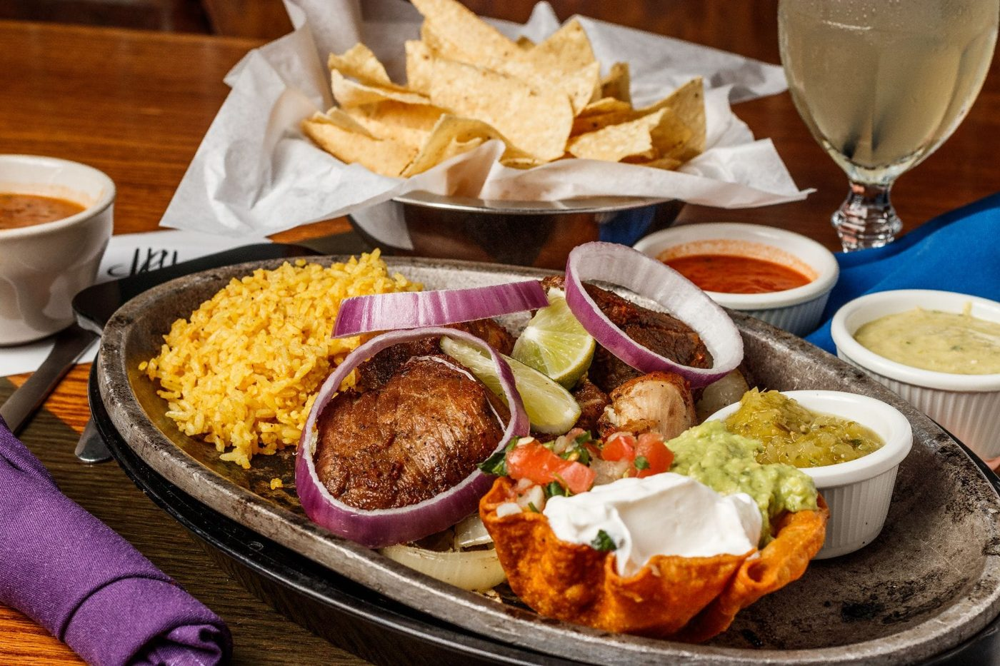
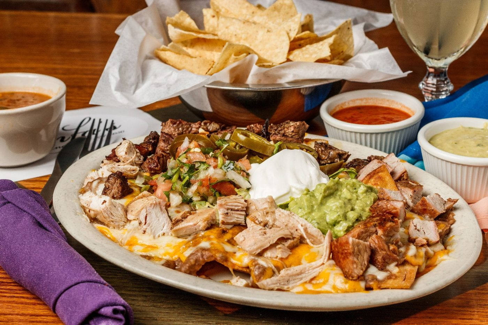
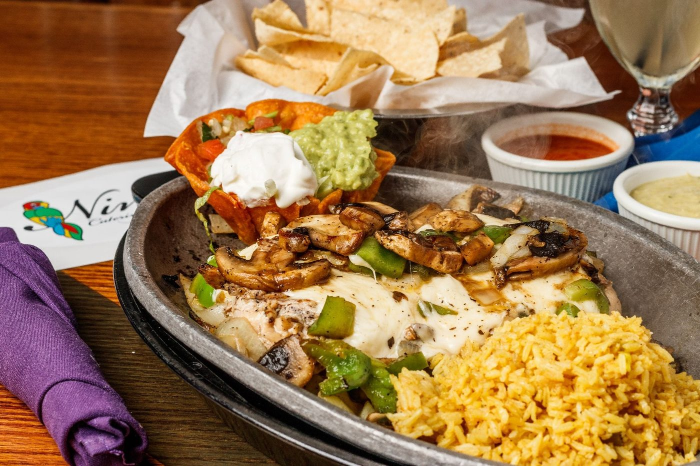
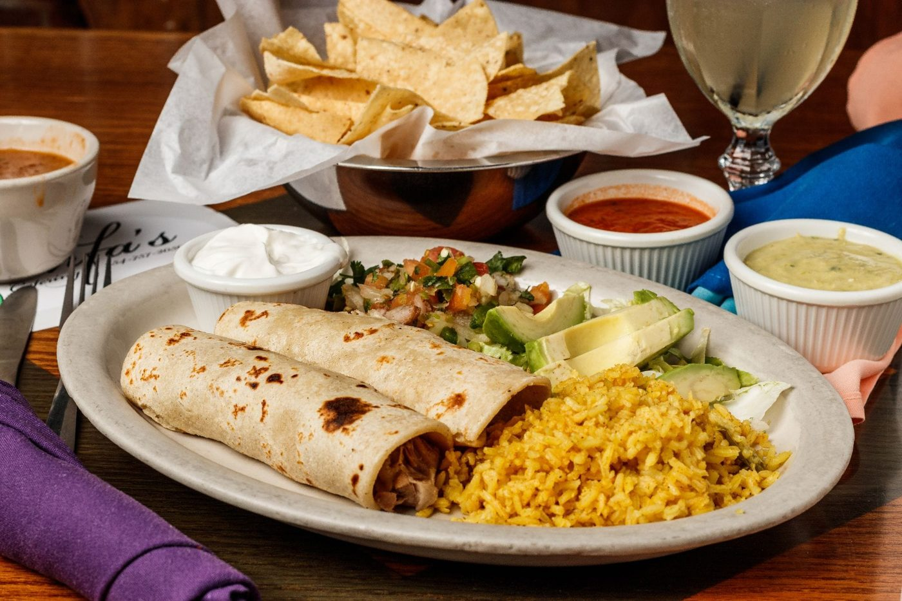
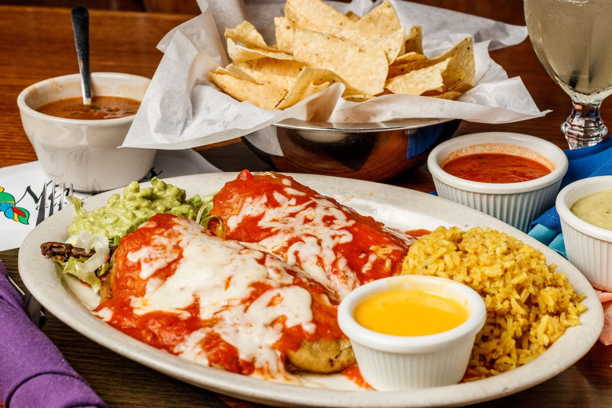
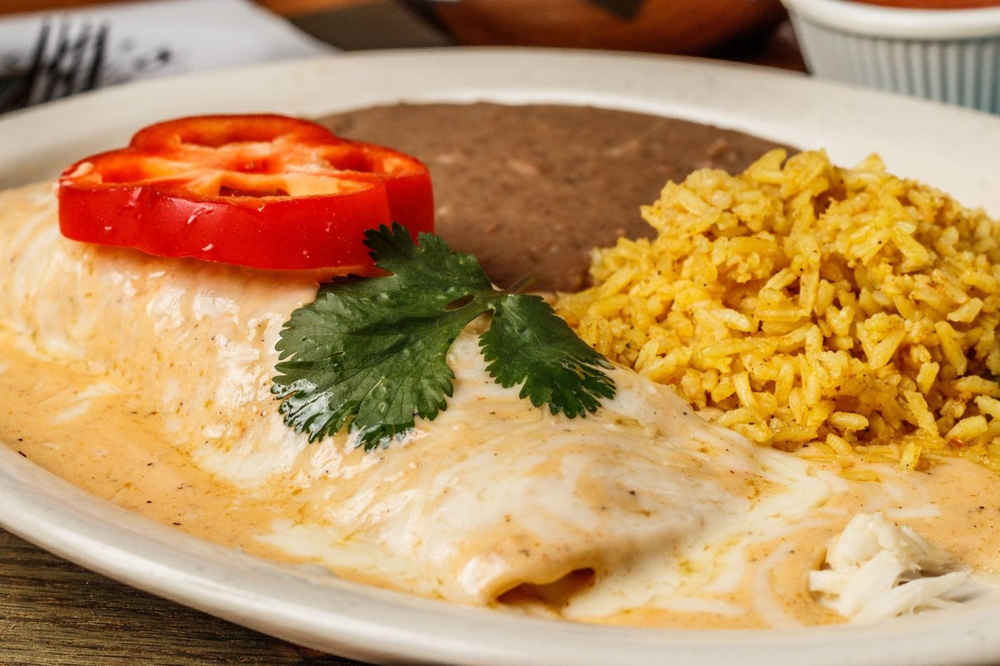
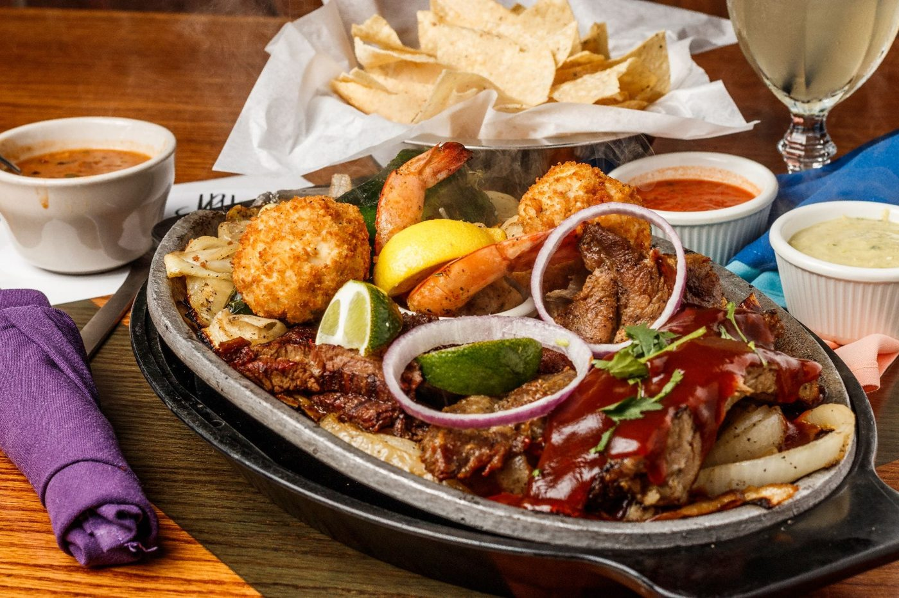

Fresh Mexican flavors done right — sizzling fajitas, handmade tortillas, and real Tex-Mex just steps from the Brazos River.
Discover bold flavors from our most loved menu favorites — every dish made fresh, every tortilla pressed by hand.

The gold standard of slow-cooked pork. Tender pork chunks braised for hours until succulent, then flash-fried to order for that perfect, golden-crisp exterior. Served with house-made tomatillo sauce, pico de gallo, guacamole and sour cream.

Topped with your choice of Fajita Beef, Chicken, or Pork. Served with refried beans, Monterey Jack and cheddar cheese, sour cream, guacamole, jalapenos and pico de gallo.

Charbroiled chicken breast topped with jack cheese, sauteed mushrooms, onions and bell peppers. Served with Mexican rice, charro beans, guacamole, sour cream and pico de gallo.

Two handmade corn tortillas filled with our signature carnitas, served with avocado slices, pico de gallo and sour cream, plus rice and charra beans.

Two cheese or beef picadillo stuffed poblano peppers topped with ranchera sauce and jack cheese. Served with rice and charra beans.

Lump crab meat in handmade corn tortillas with our seafood cream sauce, jack and parmesan cheese. Served with rice and refried beans.
In 1973, Ninfa Rodriguez Laurenzo opened a small 10-table restaurant on Navigation Street in Houston, cooking with her own pots and pans. Everyone called her Mama, and she built something bigger than a restaurant: a place where every guest was treated like family, and every margarita was made to be shared.
Here in downtown Waco, just steps from the Brazos River on South 3rd Street, we carry her legacy forward one plate, one pitcher, one welcome at a time.
The year Mama Ninfa opened her first 10-table restaurant in Houston.
Tortillas pressed by hand and queso simmered low and slow, every day.
Fajitas hit the table straight off cast iron, fresh off the grill.
Signature Ninfa's Ritas, margaritas & more at the bar or to go.

Check out some of our most recent reviews from guests here in Waco.
"I have visited Ninfa's Mexican Restaurant several times, and every experience has been wonderful! The food is consistently fresh, flavorful, and served in generous portions. I especially love the warm chips with guacamole, and the sizzling vegetable fajitas are colorful, perfectly seasoned, and absolutely delicious."
"We ordered the spinach shrimp enchiladas and the crab stuffed burrito. We also got the apple filling thingy with ice cream... AMAZING. Every bite was delicious. More food than we could eat and pretty good pricing."
"Ordered off the lunch menu: large beef enchilada with rice, beans and guacamole, plus the kids taco plate and a strawberry blended margarita. Was not able to finish — a healthy amount of food. The flavors were well paired and savory."
Daily specials, fresh-off-the-grill photos, and what's happening in the dining room — straight from our Facebook page.
Follow Us on Facebook